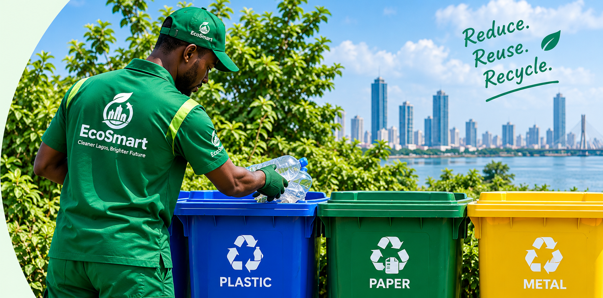

RECYCLING MADE EASY
Turn Waste into Resources
Recycling helps reduce pollution, saves natural resources and creates a cleaner, healthier Lagos. Together, we can give waste a second life and build a sustainable future for our communities.

RECYCLING CATEGORIES
What Can You Recycle?
Sort your waste correctly. Each material has a new purpose.


THE PROCESS
How Recycling Works
From your home to a new product - it's a simple process that makes a big difference.
1
Sort & Seperate
Keep recyclables clean and in right bin.
2
Collection
EcoSmart collects and transports the materials.
3
Processing
Materials are cleaned, shredded and processed.
4
New Products
Recycled materials become new useful products.